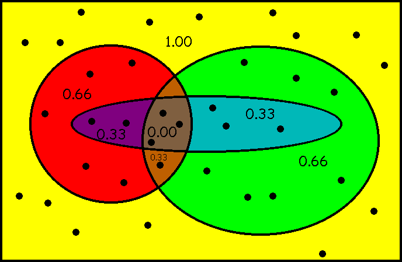

Problem and System Ratings
Problems and Data
System Ranking by Subsumption
Problem Rating by SOTA
- Use SOTA contributors to avoid weak systems
- The fraction of SOTA contributors that fail

(sample data)
- Discrete ratings: Easy - Difficult - Unsolved
System Rating by SOTA
Evidence of Progress
- Declining problem ratings are evidence of progress
Reports available
online
at www.tptp.org/cgi-bin/SystemOnTPTP